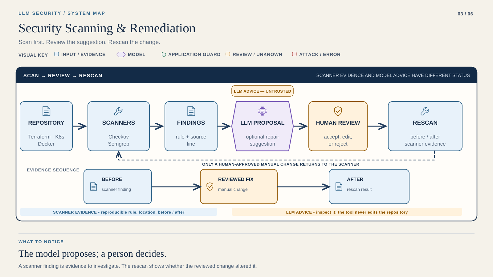

STEP 01 / 05
Scan locally
OFFLINE
Working directory: Course root
.venv/bin/python tools/student_replay.py --lab lab3 --runtime "$REPLAY_ENV"Course position 3 of 6 · not saved completion
LAB 03 / FOUNDATION
Scan first. Fix second. Rescan.
Duration is a planning estimate. Live latency varies.
Make at least three reviewed fixes. Verify each with scanner evidence.
A complete experiment can contain failed assertions. Explain them.

Read it: The advice stage never applies edits. Keep the human review boundary before the repeat scan.
A rejected proposal returns to review. Only a human-approved edit reaches the rescan.
Runtime → Provider Setup → your terminal. Start offline.
STEP 01 / 05
Working directory: Course root
.venv/bin/python tools/student_replay.py --lab lab3 --runtime "$REPLAY_ENV"STEP 02 / 05
Optional: ask for repair proposals. A model response is advice, never an instruction to apply automatically.
Working directory: Course root
cd labs/lab3
mkdir -p reports
LLM_OFFLINE=0 "$COURSE_PYTHON" src/gemini_remediate.py ../../reports/offline/lab3/checkov.json ../../reports/offline/lab3/semgrep.json > reports/remediation_suggestions.jsonSTEP 03 / 05
Review the findings, make at least three justified manual fixes, then rescan. Keep the before reports.
Working directory: labs/lab3 (continue in the same shell)
"$COURSE_PYTHON" scripts/run_checkov.py --after
"$COURSE_PYTHON" scripts/run_semgrep.py --afterSTEP 04 / 05
STEP 05 / 05
Capture → inspect → include in your submission. Keep failed rows. They are evidence too.
Reading position only. Run commands in your terminal.
Install the pinned runtime. The offline command invokes real local scanners with checked-in rules. Read Lab 3 scanner wrapper. Do not deploy the intentionally insecure examples.
Review reports/offline/lab3/checkov.json and semgrep.json. For optional live remediation advice, set LLM_PROVIDER, a supported bare MODEL_ID, and that provider’s API key:
Apply reviewed edits manually, then rescan:
Capture → inspect → include in your submission. Keep failed rows. They are evidence too.
For each fix, record the scanner rule, source path, edit, reference, and after-scan status. Keep the baseline reports, after reports, a fix table, and a short reflection. A changed total alone does not prove the specific issue was fixed.
Baseline scanner reports · after reports · fix table · reflection
Include commands, model identity, evidence type and limitations. Exclude keys and environment files.
Bring the command, redacted error and relevant result.
Save reports first. Use a fresh starter copy for a new experiment.
Provider SetupRuntimeCourse Home
If a scanner is missing, reactivate the pinned Python runtime and run "$COURSE_PYTHON" -m pip check. If model advice fails, review scanner findings manually.
Continue to Lab 4 →